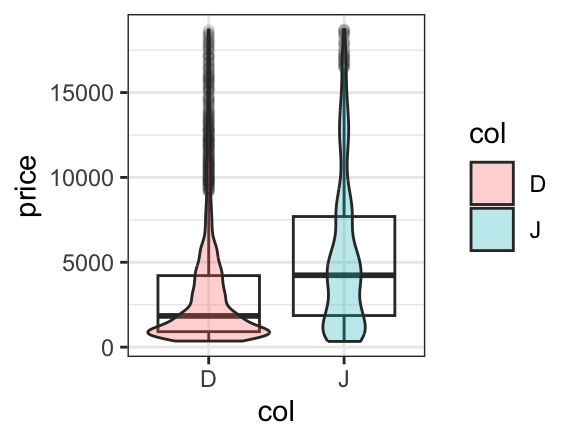
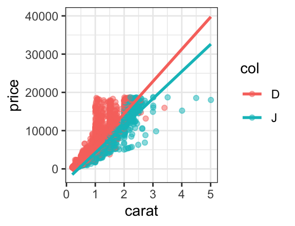
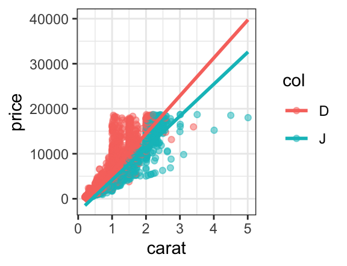
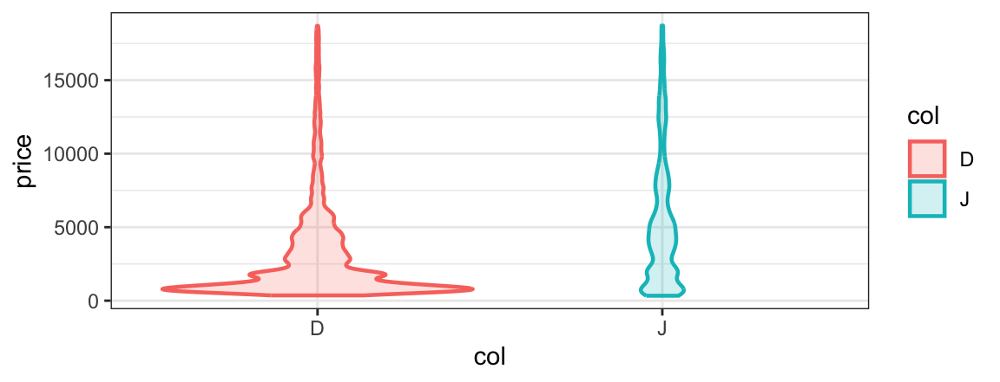
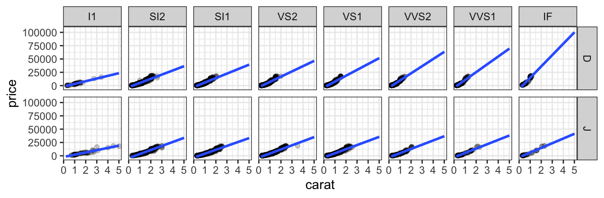

ggformula: Another Option for Teaching Graphics in R to Beginners
Randall Pruim
2023-11-09
Source:vignettes/pkgdown/ggformula-blog.Rmd
ggformula-blog.RmdDavid Robinson’s excellent blog entry “Teach the tidyverse to
beginners” (http://varianceexplained.org/r/teach-tidyverse) argues
that a tidyverse approach is the better of two prevalent
options for teaching beginners:
“Base R first”: teach syntax such as
$and[[ ]], use built-in functions likeave()andtapply(), and use base graphics.“Tidyverse first”: start from scratch with pipes (
|>), leveragedplyrfor data transformations and summarization, and useggplot2for graphics.
As his title suggests, David prefers the second option and makes a
strong case for it. Indeed, if those were the only two options, I’d
probably choose tidyverse as well.
A third way
But these are not the only options. Nick Horton’s “Options for teaching R to beginners: a false dichotomy?”(http://sas-and-r.blogspot.com/2017/07/options-for-teaching-r-to-beginners.html) describes a third alternative that also “get[s] students doing powerful things quickly”, as David desires. This third way is based on a formula interface provided by the combination of
- the
latticepackage for graphics, - several functions from the
statspackage for modeling (e.g.,lm(),t.test()), and - the
mosaicpackage for numerical summaries and for smoothing over edge cases and inconsistencies in the other two components.
Important in this approach is the syntactic similarity that the following “formula template” brings to all of these operations.
goal ( y ~ x , data = mydata, … )
Many important data analysis operations can be executed by filling in the four boxes with the appropriate information for the desired task. This allows students to become fluent quickly with a powerful, coherant toolkit for data analysis.
Nick’s post illustrates this with an investigation of how the price of diamonds depends on (among other things) color. The similarity among the commands to compute mean price for each of two colors, to create side-by-side boxplots, to run a two-sample t test, and to fit a linear model are what make this approach so compelling.
# diamonds2 was called `recoded' in Nick's post
library(dplyr)
diamonds2 <- diamonds |>
filter(color == "D" | color == "J") |>
mutate(col = as.character(color))
mean(price ~ col, data = diamonds2) ## Warning in mean.default(price ~ col, data = diamonds2): argument is not numeric
## or logical: returning NA
bwplot(price ~ col, data = diamonds2)
t.test(price ~ col, data = diamonds2)
lm(price ~ col, data = diamonds2)This “Less Volume, More Creativity” approach is outlined in more detail in a recent R Journal article and has worked well for a growing number of instructors in first (and subsequent) courses (see for example Wang et al., “Data Viz on Day One: bringing big ideas into intro stats early and often” (2017), TISE).
Trouble in paradise
But as Nick hinted in his blog post, the use of lattice
has some drawbacks. While basic graphs like histograms, boxplots,
scatterplots, and quantile-quantile plots are simple to make with
lattice, it is challenging to combine these simple plots
into more complex plots or to plot data from multiple data sources.
Splitting data into subgroups and either overlaying with multiple colors
or separating into sub-plots (facets) is easy, but the labeling of such
plots is not as convenient (and takes more space) that the equivalent
plots made with ggplot2. And in our experience, students
generally find the look of ggplot2 graphics more
appealing.
On the other hand, introducing ggplot2 into a first
course is challenging. The syntax is more verbose, so it takes up more
of the limited space on projected images and course handouts. More
importantly, the syntax is entirely unrelated to the syntax used for
other aspects of the course. For those adopting a “Less Volume, More
Creativity” approach, ggplot2 is tough to justify.
ggformula: The third-and-a half way
Danny Kaplan and I recently introduced ggformula, a
package that provides a formula interface to ggplot2
graphics. Our hope is that this provides the best aspects of
lattice (the formula interface and lighter syntax) and
ggplot2 (modularity, layering, and better visual
aesthetics).
For simple plots, the only thing that changes is the name of the
plotting function. Each of these functions begins with gf.
Here are two examples, either of which could replace the side-by-side
boxplots made with lattice in Nick’s post.
gf_boxplot(price ~ col, data = diamonds2)
gf_violin(price ~ col, data = diamonds2)If we like, we can even overlay these two types of plots to see how
they compare. To do so, we simply place the then operator
(|>, also called a pipe) between the two layers and
adjust the transparency so we can see both where they overlap.
gf_boxplot(price ~ col, data = diamonds2, alpha = 0.05) |>
gf_violin(price ~ col, data = diamonds2, alpha = 0.3, fill = "navy", col = NA)
Setting and mapping attributes of a plot
In the example above, we set certain attributes (fill, color,
opacity) to constants ("navy", NA,
0.3). Often we want the values of these attributes to be
determined by the data, this is called mapping rather than setting and
is indicated by an additional ~. One can read
fill = "navy" as “fill is (or equals) navy” and
fill = ~ col as “fill is determined by
col. (Which colors get used for which values is controled
by the fill scale for the plot, and this scale can be modified by the
user who doesn’t like the default scale choice.)
gf_boxplot(price ~ col, data = diamonds2, alpha = 0.05) |>
gf_violin(price ~ col, data = diamonds2, alpha = 0.3, fill = ~ col)
A more interesting use of mapping colors occurs when elements of each color overlap. For example, a scatterplot with overlaid regression fits shows that although the price of J diamonds tends to be higher overall, after taking into consideration the number of carats, the D color diamonds tend to sell for more than the J color diamonds. (It also shows that the simple linear fit is poor for the largest diamonds.)
xyplot(price ~ carat, groups = col, data = diamonds2,
auto.key = TRUE, type = c("p", "r"), alpha = 0.5)
gf_point(price ~ carat, color = ~ col, data = diamonds2, alpha = 0.5) |>
gf_lm(price ~ carat, color = ~ col, data = diamonds2, alpha = 0.5) ## Warning: Using the `size` aesthetic with geom_line was deprecated in ggplot2 3.4.0.
## ℹ Please use the `linewidth` aesthetic instead.
## This warning is displayed once every 8 hours.
## Call `lifecycle::last_lifecycle_warnings()` to see where this warning was
## generated. 

In lattice, this requires us to manually turn on a
legend with auto.key = TRUE and to introduce the
type argument and the c() function to get both
layers. In ggplot2, we simply put one layer over the other
(so no new syntax to learn). The (improved) legend is generated
automatically, and the portion of the plot devoted to the data is
substantially larger than for the lattice plot. So the
ggformula plot is both technically better and syntactically
simpler than its lattice counterpart.
Getting a little help
Everyone forgets some details from time to time. The
ggformula functions provide a mechanism for obtaining a bit
of help without going to the full help page for the function: simply
execute the function with no arguments.
## gf_violin() uses
## * a formula with shape y ~ x.
## * geom: violin
## * stat: ydensity
## * position: dodge
## * key attributes: alpha, color, fill, group, linetype, linewidth, weight,
## draw_quantiles = NULL, trim = TRUE,
## scale = "area", bw, adjust = 1, kernel =
## "gaussian"
##
## For more information, try ?gf_violinThis terse help describes how the formula is used. (For those already
familiar with ggplot2, the formula shape shows how the
formula is converted into ggplot2 aesthetics.) Also listed
are the geom (type of mark drawn), any non-identity stats and positions,
and the main attributes that can be mapped or set to refine the plot.
Just this much help lets us quickly (a) thinken the lines, (b) make the
violins less (or more) smooth, (c) add lines at the quartiles of the
data, and scale the area of the violins according the number of
observations represented.
gf_violin(price ~ col, data = diamonds2,
color = ~ col, fill = ~col, alpha = 0.2,
scale = "count",
draw_quantiles = c(0.25, 0.5, 0.75), size = 0.8,
adjust = 1/2)
Facets
Sometimes it is preferable to create multiple plot arranged in a grid
rather than to overlay subgroups in the same space.
ggformula provides two ways to create these facets. The
first uses | very much like lattice does.
gf_point(price ~ carat | col, data = diamonds2, alpha = 0.2) |>
gf_lm()
gf_point(price ~ carat | col ~ clarity, data = diamonds2, alpha = 0.2) |>
gf_lm()
Notice that the gf_lm() layer inherits information from
the the gf_points() layer in these plots, saving some
typing when the information is the same in multiple layers.
The second way to adds facets with gf_facet_wrap() or
gf_facet_grid(). The commands below create the same plots
as those above.
gf_point(price ~ carat, data = diamonds2, alpha = 0.2, size = 0.5) |>
gf_lm(alpha = 0.5) |>
gf_facet_wrap( ~ color)
gf_point(price ~ carat, data = diamonds2, alpha = 0.2, size = 0.5) |>
gf_lm(alpha = 0.5) |>
gf_facet_grid( color ~ clarity)Refinements
The full power to modify plot limits, titles, scales, theme elements,
etc. is inherited by ggformula from ggplot2.
For the most common of these we offer the functions
gf_lims(), gf_labs(), and
gf_theme().
For the rest, we offer gf_refine() which allows us to make
any ggplot2 refinements without resorting to the
+ syntax used by ggformula.
gf_point(price ~ carat, data = diamonds2,
color = ~ col, alpha = 0.2, size = 0.5) |>
gf_lm(alpha = 0.5) |>
gf_facet_wrap( ~ color) |>
gf_labs(title = "Price vs Size", subtitle = "(2 colors of diamonds)",
caption = "source: ggplot2::diamonds",
x = "size (carat)", y = "price (US dollars)"
) |>
gf_refine(scale_color_manual(values = c("red", "navy"), guide = "none")) |>
gf_theme(theme_minimal())
Although this example uses a lot of customization, it is completely modular. Any line of the customization can be omitted, or additional features can be customized one line at a time.
Fitting into the tidyverse work flow
ggformala also fits into a tidyverse-style workflow
(arguably better than ggplot2 itself does). Data can be
piped into the initial call to a ggformula function and
there is no need to switch between |> and +
when moving from data transformations to plot operations.